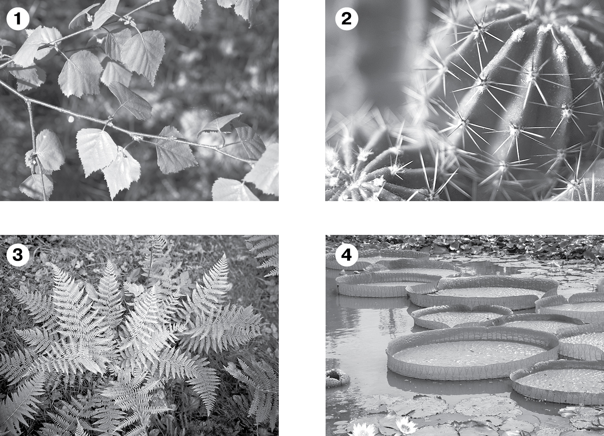

> Введите ваши данные для доступа к терминалу Сектора С:
БИОЛОГИЧЕСКИЙ МОДУЛЬ: ГЛАВА 3 (§17. НАЗЕМНО-ВОЗДУШНАЯ СРЕДА ОБИТАНИЯ)
Сочетание температуры и влажности воздуха, облачность, осадки, направление ветра называют п.
Характерные для определённой местности многолетние сезонные изменения погоды называют к.
Быстрое перемещение воздуха по горизонтали над земной и водной поверхностью называют в.
Перетащите плашки живых организмов в соответствующие зоны обитания:
Рассмотрите рисунки 1, 2, 3, 4 и выберите соответствующие экологические условия для каждого из них:
